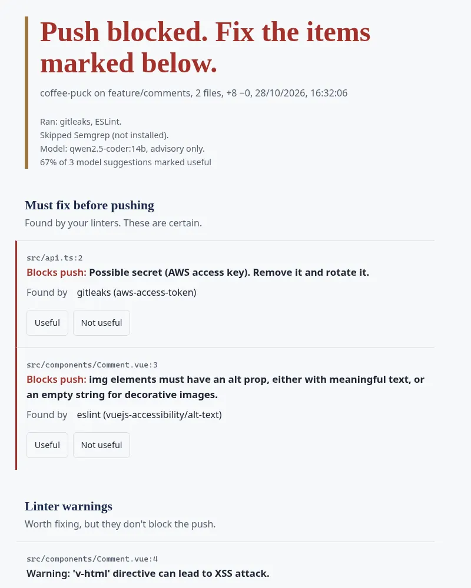
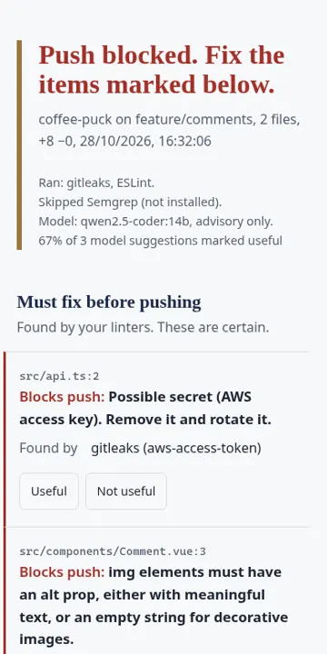

Local AI code reviewer
Runs before code is pushed. Your linters go first, and only they can block. Then a model on your own GPU gives up to five suggestions. Nothing leaves the machine.

What it is
A pre-push check. It runs your own linters first (ESLint, gitleaks, Semgrep when installed), and only they can block a push. Then a local model, run through Ollama on your own graphics card, gives up to five advisory suggestions on security (OWASP), accessibility and performance, shown on an accessible results page.
Why I built it
I wanted AI review without sending code to anyone. Nothing leaves the machine.
Screenshots

How it's built
Node.js, a Git pre-push hook, your existing linters and Ollama (tested with qwen2.5-coder 7b and 14b).
Status and limits
In a real test it blocked a push for a missing image alt and flagged a layout-shift risk. Small models get things wrong, so their findings are advice only. The repo is private.
Links
Private repo, demo on request. Get in touch.